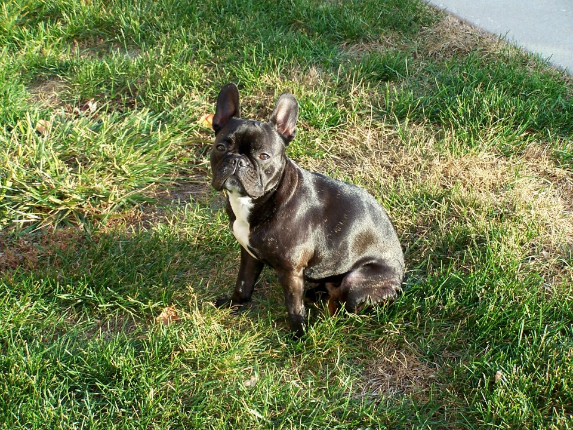
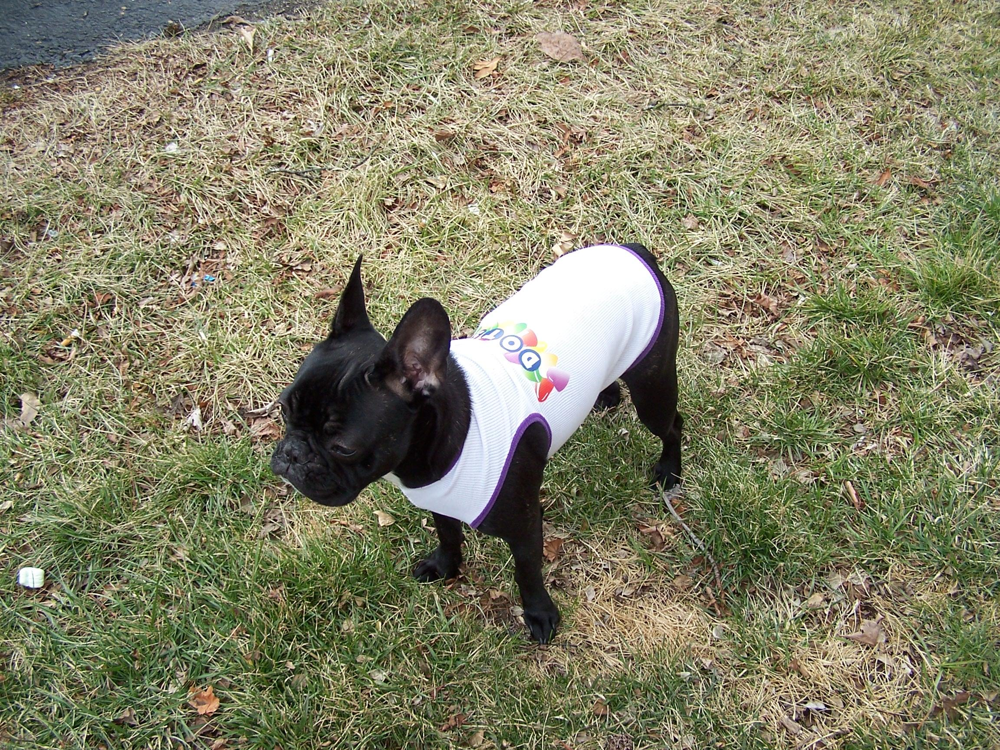

Lil' Princess Dorathea

As a busy architecture student, I had never considered getting a dog. One day, when I was flipping through a fashion magazine, I saw a really cute dog, in a Barneys ad, that I had never seen before. I showed my friend and we fell in love with how cute it was. I ended up researching, and finding a book at Barnes and Noble. It was a French Bulldog.
I knew I had to get one. It was crazy. I hadn't had a dog since I was a child.
These dogs are funny looking, clown-dogs. The more I learned about Frenchies, the more I fell in love with the breed. I studied the many different types. I learned the breed standard. What really closed the deal for me, was seeing the litters of Frenchie puppies! They absolutely captured my heart, with their giant bat ears, smashed in cutie-faces, big solemn eyes, short cobbly bodies, and they are funny to watch!

French Bulldogs barely shed, hardly bark on their own, unless encouraged, don't require a lot of exercise. They are a small, big-dog. Perfect for an apartment. They have huge personalities; they’re so friendly, they love everyone, more like they love the attention they get from everyone.
I found a breeder online in Georgia and I took a chance. I was looking for as solid black as I could find. The breed standard disqualifies solid black, the coat must have some brindling. When I saw Lil' Princess, I knew she was the one for me. She was solid black with very lilttle brindling, had a lovely, perfectly placed white chest, giant ears, and the longer legs that I was looking for. I really had no idea what I was getting myself into.She arrived at the airport and we went to meet her. She was so sweet and friendly. We bonded immediately. We took her to Petsmart and got all kinds of treats and toys. And she met her lifetime companion, (sock)Monkey that day!
I named her Dorathea or Dot, for short, after a little Frenchie I had seen online, that I loved. Dot went with me everywhere. Anywhere she could go, she did. We traveled to Fallingwater, Pennsylvania, we traveled to a wedding out of state, we went to many local French Bulldog meetups. Everywhere Dot went, she made friends. The first time we got her a tank top, I put it on and she literally pranced around, looking to see if anyone was looking. People would comment about how dainty she was. She loved to run wild and would race around as fast as she could, she loved sniffing everything, especially grazing like a cow. She truly was a femme tomgirl. One of Dots favorite things to do was tug a rope. Because of her strong front end, she almost always won the rope. 
For the years Dot owned me, she was my constant companion, always by my side. Dot was truly my doghter and soul mate. What a great experience it was knowing a French Bulldog.